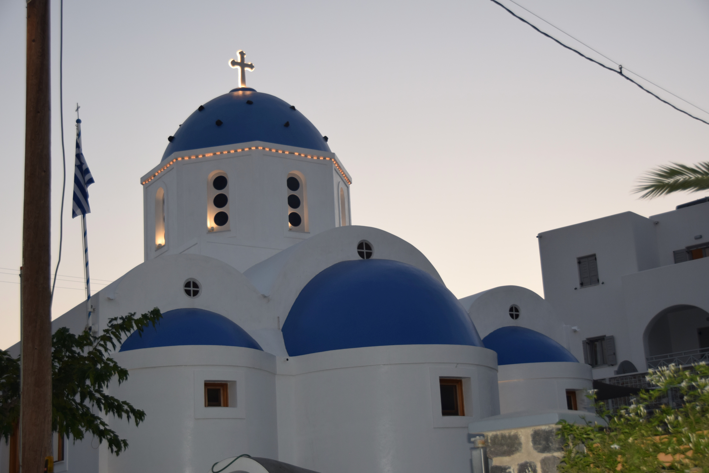

Travelling the World

The Allure of World Travel
Traveling the world is an invitation to immerse yourself in the beauty and diversity of our planet. Each destination has its own rhythm and stories, waiting to be discovered. From the sunlit ruins of Machu Picchu to the tranquil canals of Venice, the world’s wonders remind us of humanity’s vast creativity and history. Yet, the magic of travel often lies beyond iconic landmarks. It’s in the unplanned encounters—a street performer’s melody in Paris, a shared meal with strangers in a remote village, or the laughter exchanged despite language barriers. These moments create memories that endure long after the journey ends. Travel is a celebration of differences and a reminder of our shared humanity, offering countless opportunities to broaden our perspectives.
Broadening Perspectives Through Exploration
Traveling isn’t just about reaching new destinations; it’s about embracing new ways of seeing the world. Immersing yourself in unfamiliar cultures teaches humility, patience, and adaptability. Experiencing daily life in a distant land fosters empathy, revealing both the commonalities and unique expressions of human existence. Whether savoring the spices of an unfamiliar dish or learning about age-old traditions, each experience adds depth to our understanding. Travel challenges stereotypes, encourages open-mindedness, and often redefines our values, leaving us changed in profound and unexpected ways.
The Transformative Power of Adventure
World travel holds the power to transform. It pushes us out of our comfort zones, inviting personal growth and discovery. Standing before the vastness of the Sahara or the icy grandeur of Antarctica instills a humbling awe, while vibrant cities like Tokyo or Rio de Janeiro ignite curiosity and wonder. These moments shape who we are, shifting perspectives and inspiring creativity. In the process, travel becomes more than just a physical journey—it’s a journey of self-discovery. Mark Twain aptly said, “Travel is fatal to prejudice, bigotry, and narrow-mindedness.” Exploring the world invites us to see beyond borders, fostering a deeper appreciation for the vast, interconnected human experience.

Rediscovering Nature Through Travel
Traveling the world often rekindles our connection to nature, reminding us of its awe-inspiring beauty and fragility. From the lush rainforests of the Amazon to the stark, otherworldly landscapes of Iceland, the Earth offers countless opportunities to witness its wonders. Standing beneath a starlit sky in the Australian Outback or hearing the thunderous roar of Victoria Falls can be humbling experiences, underscoring the planet's vastness and power. These journeys also highlight the need to preserve what we explore. Witnessing endangered wildlife in their natural habitats or seeing coral reefs threatened by climate change emphasizes our responsibility to protect these treasures. Through travel, we gain not only a sense of wonder but also a renewed commitment to safeguarding the world’s natural heritage for future generations.
The Bonds Forged on the Journey
One of the most rewarding aspects of travel is the connections forged along the way. Whether it’s a friendship sparked with a fellow traveler on a crowded train or a bond formed with a local who shares their culture and traditions, these interactions become the heart of the journey. They remind us that despite our differences, human kindness is universal. These relationships often transcend language and cultural barriers, leaving lasting impressions. The stories shared, laughter exchanged, and even the challenges faced together make the experience richer. In a world often divided, travel has the unique power to foster understanding and unity, one connection at a time.
Travel Destinations
- Philippines
- Beaches
- Good food
- Hot springs
- Greece
- Ancient ruins
- Black sand beaches
- Gyros
- Italy
- The Colosseum
- Vatican City
- Gelato
- Singapore
- Gardens by the Bay
- Marina Bay Sands
- Cloud Forest
- Prague
- Baguettes
- Castles
- Christmas markets
Watch video below for more travel destinations: